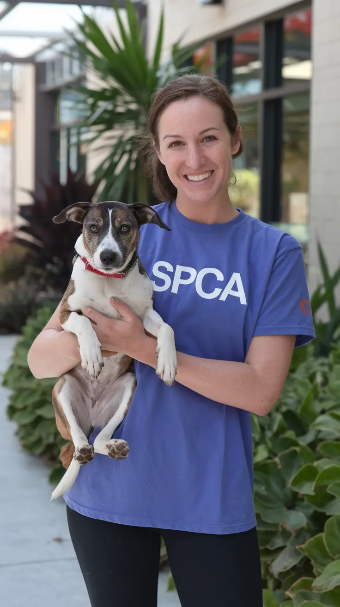
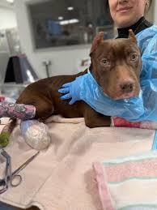
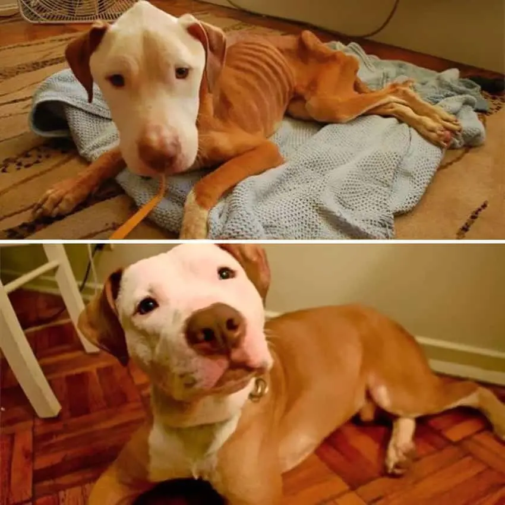

Every Life Deserves a Second Chance
The SPCA South Africa is dedicated to protecting animals from cruelty, neglect, and suffering. Through rescue, rehabilitation, and adoption, we work every day to give animals the future they deserve.
Your support — whether through adoption, donation, or volunteering — directly changes lives.
Get Involved
Our Impact
Every year, SPCA branches across South Africa respond to thousands of cruelty cases, rescue injured and abandoned animals, and rehabilitate them for new homes.
Behind every rescue is a team of inspectors, veterinarians, and volunteers working tirelessly to ensure that no animal suffers without help.
🐾 Bella’s Rescue Story

Bella was found abandoned on the outskirts of Johannesburg, severely malnourished and unable to walk properly.
After weeks of medical care and rehabilitation at an SPCA facility, she slowly regained strength, trust, and her playful personality.
Today, Bella has been adopted into a loving family where she enjoys safety, warmth, and care — something she was once denied.
🐾 Max’s Journey to Recovery

Max was rescued from a severe neglect situation where he had limited access to food and medical care.
SPCA inspectors intervened in time, providing emergency treatment and long-term rehabilitation support.
After months of recovery, Max was adopted by a caring family and now lives a healthy, happy life filled with companionship and stability.
Be Part of the Change
You don’t need to be an expert to make a difference. Every adoption, donation, and volunteer effort helps us continue our mission of protecting animals across South Africa.
Adopt, Donate or Volunteer